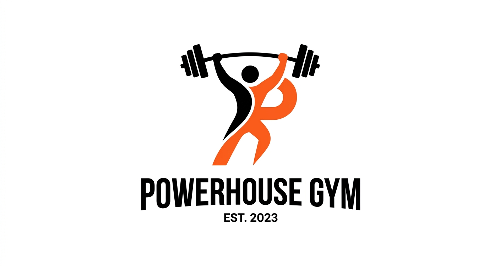
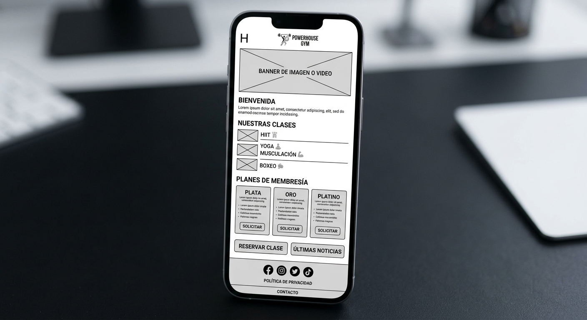
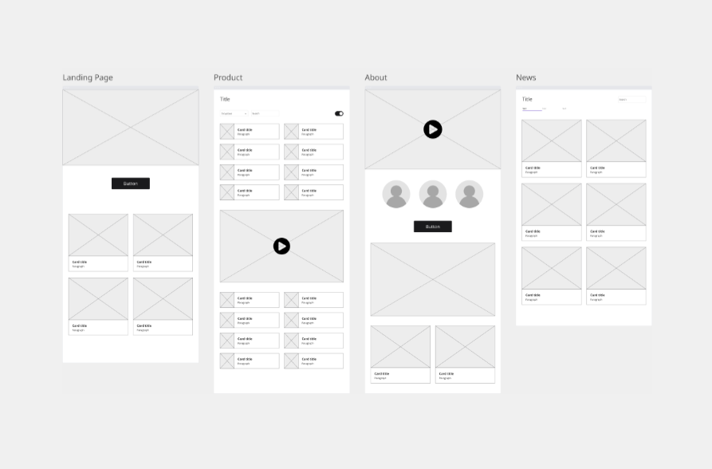

Site Name

Bay Area eBiking Club
Reason for choice: This name represents an active regional community focused on electric biking in the San Francisco Bay Area. It is memorable, concise, and clearly communicates the purpose of the organization to prospective members.
Optional Domain Availability: bay-ebike.org
Site Purpose
The site provides a central hub for regional e-biking enthusiasts by offering curated trail guides, safety guidelines, and e-bike buying/maintenance recommendations. Additionally, it features dynamic community events and an online membership registration form.
Scenarios
- Scenario 1: What is the best e-bike model to buy for steep or mountainous trail areas?
- Scenario 2: Where can I find contact information for the club directors and join weekly group rides?
Color Schema
The site utilizes the following palette to convey an energetic outdoor theme while ensuring high text contrast (WCAG AA compliant):
Typography
- Heading Font: Montserrat (Sans-serif) – Applied to all headings (
h1,h2,h3) for a clean, modern aesthetic. - Body Font: Roboto (Sans-serif) – Applied to all body text, paragraphs, and list items for optimal legibility.
Wireframes
Visual representation of the target home page layout across different screen sizes:
Mobile View

Desktop View
